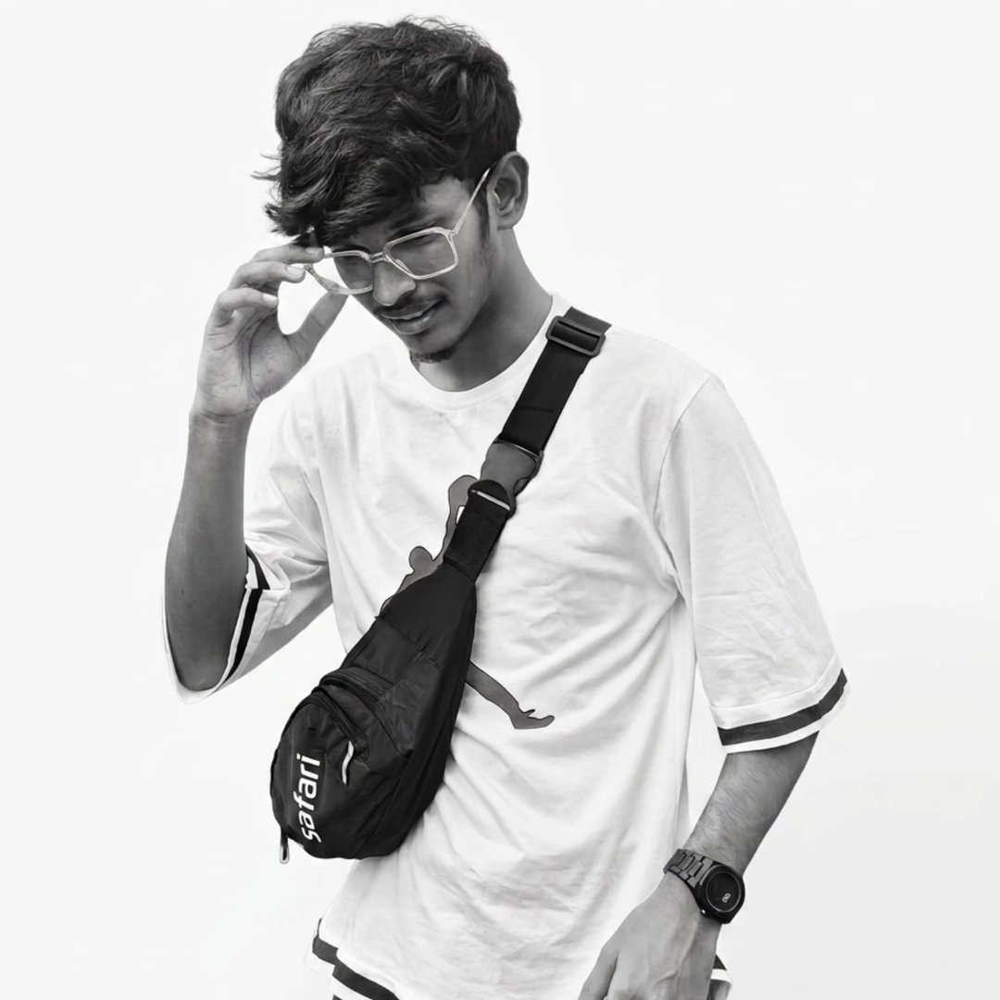

I am an IT undergraduate student at SRM Institute of Science and Technology, Ramapuram Campus. Highly motivated by deep software development and engineering design, I channel my technical background into creating smart systems—focusing specifically on Artificial Intelligence integration, responsive application logic, and modern software-driven networks.
Initiate Project InquiryEdgeShield AI is a comprehensive, AI-based road safety and driver monitoring system engineered to actively improve transportation security. By deploying smart computer vision detection layers and swift real-world evaluation routines, the platform monitors driver attentiveness and processes real-time contextual feedback loops to distribute immediate emergency alerts.
OneHealth-Grid is an emergency healthcare support network platform designed to establish instantaneous pipelines between blood donors, localized patients, and regional hospitals. The architecture leverages high-speed, location-based mapping modules to intelligently route resources during critical healthcare scenarios.
Participated in multiple competitive college-level hackathons and engineering events, designing and presenting blueprint architectures for real-world infrastructure challenges.
Successfully designed and structured two complete application models (EdgeShield AI & OneHealth-Grid) aiming to automate and resolve structural risks in healthcare and modern transportation.
Consistently focusing on team leadership, application design modules, and iterative software development paradigms across mini-project environments.